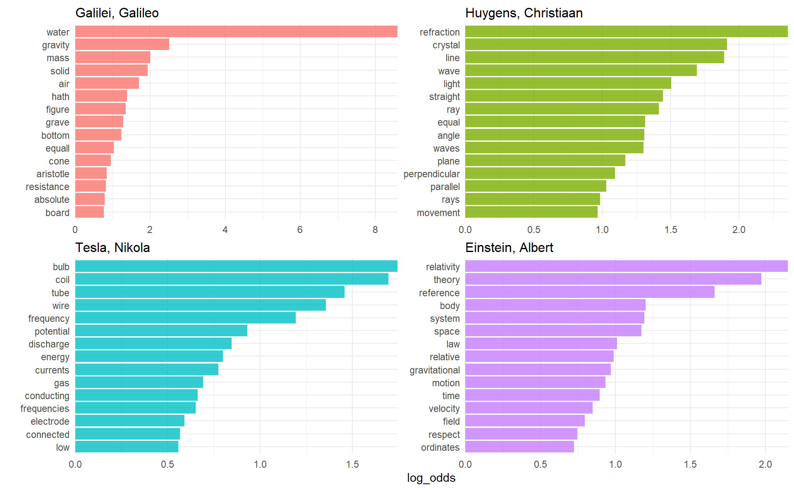

3.3 A corpus of physics texts
Let’s work with another corpus of documents, to see what terms are important in a different set of works.
library(gutenbergr)
physics <- gutenberg_download(c(37729, 14725, 13476, 30155),
meta_fields = "author")
physics
#> # A tibble: 15,410 x 3
#> gutenberg_id text author
#> <int> <chr> <chr>
#> 1 13476 "EXPERIMENTS WITH ALTERNATE CURRENTS OF HIGH POTENTIA~ Tesla, Ni~
#> 2 13476 "" Tesla, Ni~
#> 3 13476 "A Lecture Delivered before the Institution of Electr~ Tesla, Ni~
#> 4 13476 "" Tesla, Ni~
#> 5 13476 "by" Tesla, Ni~
#> 6 13476 "" Tesla, Ni~
#> # ... with 15,404 more rowsCount words as usual
physics_words <- physics %>%
unnest_tokens(word, text) %>%
anti_join(stop_words) %>%
count(author, word, sort = TRUE)
physics_words
#> # A tibble: 10,913 x 3
#> author word n
#> <chr> <chr> <int>
#> 1 Galilei, Galileo water 828
#> 2 Galilei, Galileo gravity 240
#> 3 Huygens, Christiaan refraction 218
#> 4 Galilei, Galileo air 211
#> 5 Galilei, Galileo mass 208
#> 6 Huygens, Christiaan light 201
#> # ... with 10,907 more rowsVisualize the highest log odds words (log odds is particularly useful in comparing wrting styles)
plot_physics <- physics_words %>%
bind_log_odds(word, author, n) %>%
mutate(word = fct_reorder(word, log_odds)) %>%
mutate(author = factor(author, levels = c("Galilei, Galileo",
"Huygens, Christiaan",
"Tesla, Nikola",
"Einstein, Albert")))
plot_physics %>%
group_by(author) %>%
top_n(15, log_odds) %>%
ungroup() %>%
facet_bar(y = word, x = log_odds, by = author)
Why there is _k and _x in Einstein’s text ?
physics %>%
filter(author == "Einstein, Albert",
str_detect(text, "_[kx]_?")) %>%
select(text)
#> # A tibble: 97 x 1
#> text
#> <chr>
#> 1 co-ordinates (_x, y, z_) which can be dropped from the scene of the
#> 2 space with respect to _K_ by the three perpendiculars _x, y, z_ on the
#> 3 time by corresponding values _x', y', z', t'_, which of course are not
#> 4 identical with _x, y, z, t_. It has already been set forth in detail
#> 5 manner. What are the values _x', y', z', t'_, of an event with respect
#> 6 to _K'_, when the magnitudes _x, y, z, t_, of the same event with
#> # ... with 91 more rowsSome cleaning up of the text may be in demand. Also notice that there are separate “co” and “ordinate” items in the high tf-idf words for the Einstein text; the unnest_tokens() function separates around punctuation like hyphens by default. Notice that the tf-idf scores for “co” and “ordinate” are close to same!
“AB”, “RC”, and so forth are names of rays, circles, angles, and so forth for Huygens.
physics %>%
filter(str_detect(text, "RC")) %>%
select(text)
#> # A tibble: 44 x 1
#> text
#> <chr>
#> 1 line RC, parallel and equal to AB, to be a portion of a wave of light,
#> 2 represents the partial wave coming from the point A, after the wave RC
#> 3 be the propagation of the wave RC which fell on AB, and would be the
#> 4 transparent body; seeing that the wave RC, having come to the aperture
#> 5 incident rays. Let there be such a ray RC falling upon the surface
#> 6 CK. Make CO perpendicular to RC, and across the angle KCO adjust OK,
#> # ... with 38 more rowsmy_stop_words <- tibble(word = c("eq", "co", "rc", "ac", "ak", "bn",
"fig", "file", "cg", "cb", "cm",
"ab", "_k", "_k_", "k", "_x"))
physics_words <- anti_join(physics_words,
my_stop_words,
by = "word")
plot_physics <- physics_words %>%
bind_log_odds(word, author, n) %>%
mutate(word = str_remove_all(word, "_")) %>%
group_by(author) %>%
top_n(15, log_odds) %>%
ungroup() %>%
mutate(author = factor(author, levels = c("Galilei, Galileo",
"Huygens, Christiaan",
"Tesla, Nikola",
"Einstein, Albert")))
facet_bar(plot_physics,
y = word,
x = log_odds,
by = author,
nrow = 2)